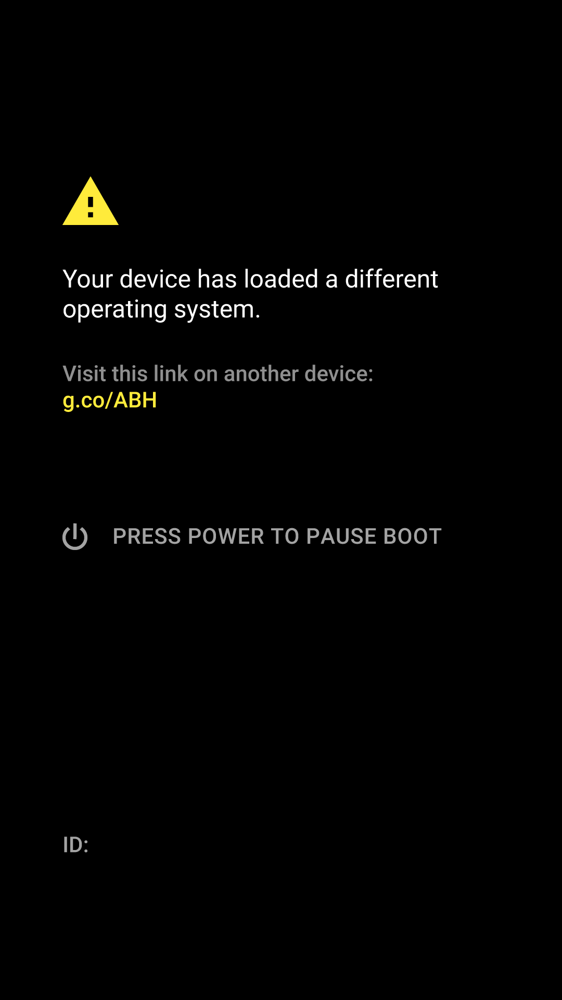
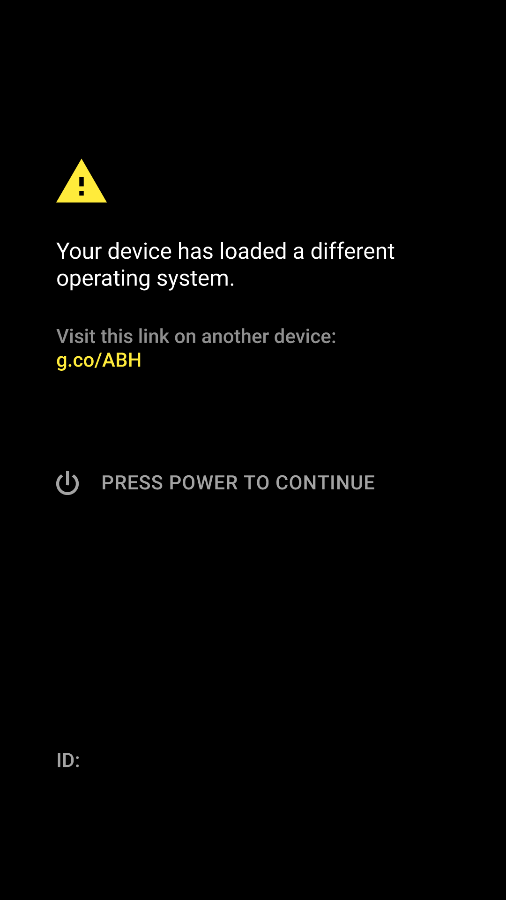
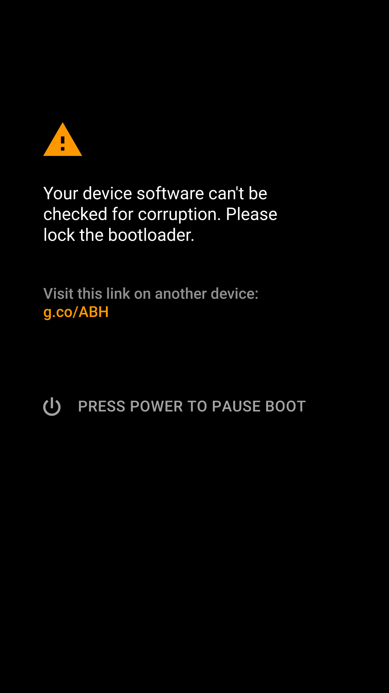
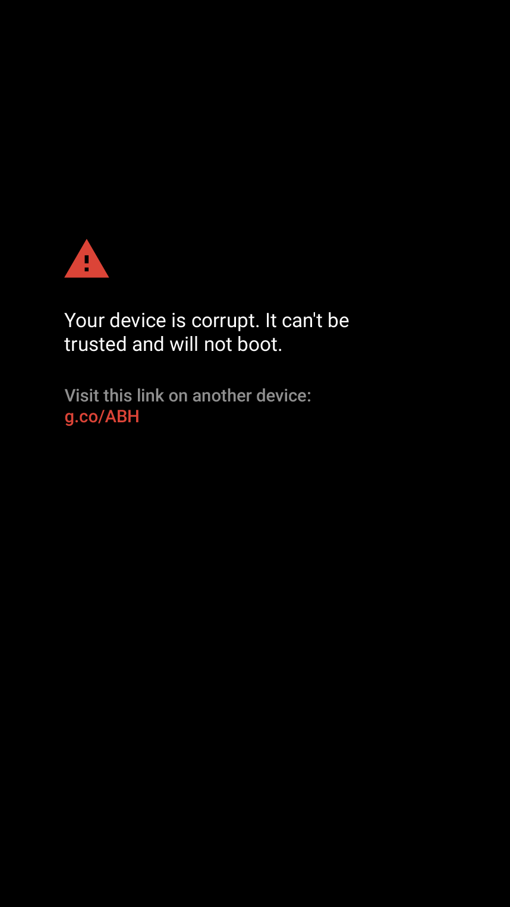
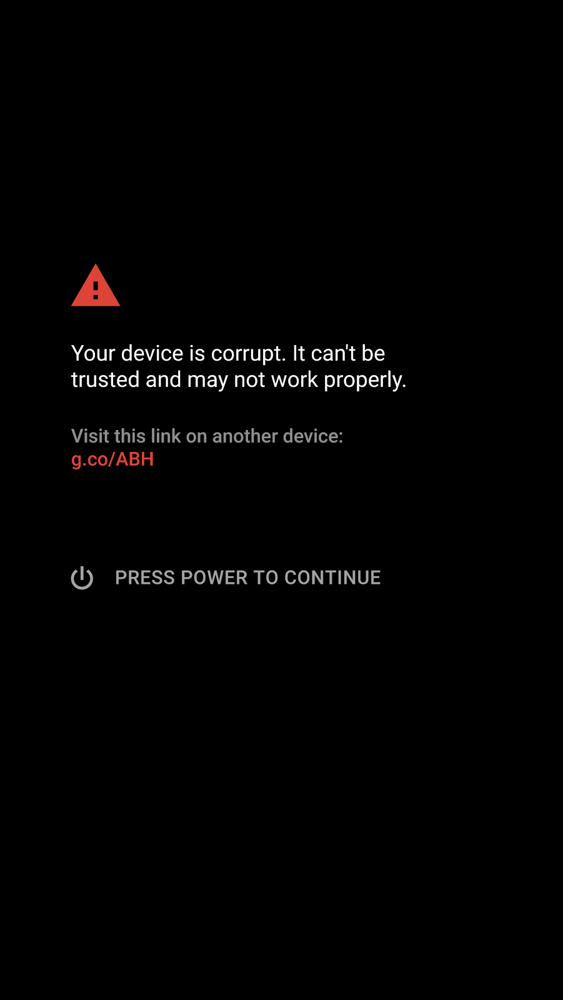

In this document
Verified boot guarantees the integrity of the device software starting from a hardware root of trust up to the system partition. During boot, each stage verifies the integrity and authenticity of the next stage before executing it.
This capability can be used to warn users of unexpected changes to the software when they acquire a used device, for example. It will also provide an additional signal of device integrity for remote attestation, and together with encryption and Trusted Execution Environment (TEE) root of trust binding, adds another layer of protection for user data against malicious system software.
If verification fails at any stage, the user is visibly notified.
Glossary
| Term | Definition |
|---|---|
| Boot state | The boot state of the device describes the level of protection provided to the end user if the device boots. Boot states are GREEN, YELLOW, ORANGE, and RED. |
| Device state | The device state indicates how freely software can be flashed to the device. Device states are LOCKED and UNLOCKED. |
| dm-verity | Linux kernel driver for verifying the integrity of a partition at runtime using a hash tree and signed metadata. |
| OEM key | The OEM key is a fixed, tamper-protected key available to the bootloader that must be used to verify the boot image. |
Overview
In addition to device state—which already exists in devices and controls whether the bootloader allows new software to be flashed—verified boot introduces the concept of boot state that indicates the state of device integrity.
Classes
Two implementation classes exist for verified boot. Depending on how fully the device implements this specification, they are defined as follows:
Class A implements verified boot with full chain of trust up to verified partitions. In other words, the implementation supports the LOCKED device state, and GREEN and RED boot states.
Class B implements Class A, and additionally supports the UNLOCKED device state and the ORANGE boot state.
Verification keys
Bootloader integrity is always verified using a hardware root of trust. For verifying boot and recovery partitions, the bootloader has a fixed OEM key available to it. It always attempts to verify the boot partition using the OEM key first and try other possible keys only if this verification fails.
In Class B implementations, it is possible for the user to flash software signed with other keys when the device is UNLOCKED. If the device is then LOCKED and verification using the OEM key fails, the bootloader tries verification using the certificate embedded in the partition signature. However, using a partition signed with anything other than the OEM key results in a notification or a warning, as described below.
Boot state
A verified device will ultimately boot into one of the four states during each boot attempt:
- GREEN, indicating a full chain of trust extending from the bootloader to verified partitions, including the bootloader, boot partition, and all verified partitions.
- YELLOW, indicating the boot partition has been verified using the embedded certificate, and the signature is valid. The bootloader displays a warning and the fingerprint of the public key before allowing the boot process to continue.
- ORANGE, indicating a device may be freely modified. Device integrity is left to the user to verify out-of-band. The bootloader displays a warning to the user before allowing the boot process to continue.
- RED, indicating the device has failed verification. The bootloader displays a warning and stops the boot process.
The recovery partition is verified in the exact same way, as well.
Device state
The possible device states and their relationship with the four verified boot states are:
- LOCKED, indicating the device cannot be flashed. A LOCKED device boots into the GREEN, YELLOW, or RED states during any attempted boot.
- UNLOCKED, indicating the device may be flashed freely and is not intended to be verified. An UNLOCKED device always boots to the ORANGE boot state.
Figure 1. Verified boot flow
Detailed design
Achieving full chain of trust requires support from both the bootloader and the software on the boot partition, which is responsible for mounting further partitions. Verification metadata is also appended to the system partition and any additional partitions whose integrity should be verified.
Bootloader requirements
The bootloader is the guardian of the device state and is responsible for initializing the TEE and binding its root of trust.
Most importantly, the bootloader verifies the integrity of the boot and/or recovery partition before moving execution to the kernel and display the warnings specified in the section Boot state.
Changing device state
State changes are performed using the fastboot flashing [unlock |
lock] command. And to protect user data, all
state transitions wipe the data partitions and ask the user for
confirmation before data is deleted.
- The UNLOCKED to LOCKED transition is anticipated when a user buys a used development device. As a result of locking the device, the user should have confidence that it is in a state produced by the device manufacturer, as long as there is no warning.
- The LOCKED to UNLOCKED transition is expected in the case where a developer wishes to disable verification on the device.
fastboot commands that alter device state are listed in the table below:
fastboot command |
Description |
|---|---|
flashing lock |
|
flashing unlock |
|
When altering partition contents, the bootloader checks the bits set by the above commands as described in the following table:
fastboot command |
Description |
|---|---|
flash <partition> |
If the bit set by flashing unlock is set, flash the
partition. Otherwise, do not allow flashing.
|
The same checks should be performed for any fastboot command
that can be used to change the contents of partitions.
Note: Class B implementations support changing device state.
Binding TEE root of trust
If TEE is available, the bootloader passes the following information to the TEE after boot/recovery partition verification and TEE initialization to bind the Keymaster root of trust:
- the public key that was used to sign the boot partition
- the current device state (LOCKED or UNLOCKED)
This changes the keys derived by the TEE. Taking disk encryption as an example, this prevents user data from being decrypted when the device state changes.
Note: This means if the system software or the device state changes, encrypted user data will no longer be accessible as the TEE will attempt to use a different key to decrypt the data.
Initializing attestation
Similar to root of trust binding, if TEE is available, the bootloader passes it the following information to initialize attestation:
- the current boot state (GREEN, YELLOW, ORANGE)
- the operating system version
- the operating system security patch level
Booting into recovery
The recovery partition should be verified in exactly the same manner as the boot partition.
Communicating boot state
System software needs to be able to determine the verification status of
previous stages. The bootloader specifies the current boot state as a
parameter on the kernel command line (or through the device tree under
firmware/android/verifiedbootstate) as described in the table
below:
| Kernel command line parameter | Description |
|---|---|
androidboot.verifiedbootstate=green |
Device has booted into GREEN boot state. Boot partition has been verified using the OEM key and it’s valid. |
androidboot.verifiedbootstate=yellow |
Device has booted into YELLOW boot state. Boot partition has been verified using the certificate embedded into the signature and it’s valid. |
androidboot.verifiedbootstate=orange |
Device has booted into ORANGE boot state. The device is unlocked and no verification has been performed. |
Note: The device cannot boot into kernel when
in the RED boot state, and therefore the kernel command line never includes the
parameter androidboot.verifiedbootstate=red.
Boot partition
Once execution has moved to the boot partition, the software there is responsible for setting up verification of further partitions. Due to its large size, the system partition typically cannot be verified similarly to previous parts but is verified as it’s being accessed instead using the dm-verity kernel driver or a similar solution.
If dm-verity is used to verify large partitions, the signature of the verity metadata appended to each verified partition is verified before the partition is mounted and dm-verity is set up for it.
Managing dm-verity
Implemented as a device mapper target in kernel, dm-verity adds a layer on top of a partition and verifies each read block against a hash tree passed to it during setup. If it comes across a block that fails to verify, it makes the block inaccessible to user space.
When mounting partitions during boot, fs_mgr sets up dm-verity for a
partition if the verify fs_mgr flag is specified for it in the
device’s fstab. Verity metadata signature is verified against the public key
in /verity_key.
Recovering from dm-verity errors
Because the system partition is by far larger than the boot partition, the probability of verification errors is also higher. Specifically, there is a larger probability of unintentional disk corruption, which will cause a verification failure and can potentially make an otherwise functional device unusable if a critical block in the partition can no longer be accessed. Forward error correction can be used with dm-verity to mitigate this risk. Providing this alternative recovery path is recommended, though it comes at the expense of increasing metadata size.
By default, dm-verity is configured to function in a “restart” mode where it immediately restarts the device when a corrupted block is detected. This makes it possible to safely warn the user when the device is corrupted, or to fall back to device specific recovery, if available.
To make it possible for users to still access their data, dm-verity switches to I/O Error (EIO) mode if the device boots with known corruption. When in EIO mode, dm-verity returns I/O errors for any reads that access corrupted blocks but allows the device to keep running. Keeping track of the current mode requires persistently storing dm-verity state. The state can be managed either by fs_mgr or the bootloader:
- To manage dm-verity state in fs_mgr, an additional argument is specified to
the
verifyflag to inform fs_mgr where to store dm-verity state. For example, to store the state on the metadata partition, specifyverify=/path/to/metadata.Note: fs_mgr switches dm-verity to EIO mode after the first corruption has been detected and resets the mode back to “restart” after the metadata signature of any verified partition has changed.
- Alternatively, to manage dm-verity state in the bootloader, pass the current
mode to the kernel in the
androidboot.veritymodecommand line parameter as follows:Kernel command line parameter Description androidboot.veritymode=enforcingSet up dm-verity in the default “restart” mode. androidboot.veritymode=eioSet up dm-verity in EIO mode. Note: Managing state in the bootloader also requires the kernel to set the restart reason correctly when the device restarts due to dm-verity. After corruption has been detected, the bootloader should switch back to “restart” mode when any of the verified partitions have changed.
If dm-verity is not started in the “restart” mode for any reason, or verity metadata cannot be verified, a warning displays to the user if the device is allowed to boot, similar to the one shown before booting into the RED boot state. The user must consent to the device to continue booting in EIO mode. If user consent is not received in 30 seconds, the device powers off.
Note: dm-verity never starts in logging mode to prevent unverified data from leaking into userspace.
Verified partition
In a verified device, the system partition is always verified. But any other read-only partition should also be set to be verified, as well. Any read-only partition that contains executable code is verified on a verified device. This includes vendor and OEM partitions, if they exist, for example.
To verify a partition, signed verity metadata is appended to it. The metadata consists of a hash tree of the partition contents and a verity table containing signed parameters and the root of the hash tree. If this information is missing or invalid when dm-verity is set up for the partition, the device doesn't boot.
Implementation details
Key types and sizes
The OEM key used in AOSP is an RSA key with a modulus of 2048 bits or higher and a public exponent of 65537 (F4), meeting the CDD requirements of equivalent or greater strength than such a key.
Note that the OEM key typically cannot be rotated if it's compromised, so protecting it is important, preferably using a Hardware Security Module (HSM) or a similar solution. It's also recommended to use a different key for each type of device.
Signature format
The signature on an Android verifiable boot image is an ASN.1 DER-encoded
message, which can be parsed with a decoder similar to the one found at: platform/bootable/recovery/asn1_decoder.cpp
The message format itself is as follows:
AndroidVerifiedBootSignature DEFINITIONS ::=
BEGIN
FormatVersion ::= INTEGER
Certificate ::= Certificate
AlgorithmIdentifier ::= SEQUENCE {
algorithm OBJECT IDENTIFIER,
parameters ANY DEFINED BY algorithm OPTIONAL
}
AuthenticatedAttributes ::= SEQUENCE {
target CHARACTER STRING,
length INTEGER
}
Signature ::= OCTET STRING
END
The Certificate field is the full X.509 certificate containing
the public key used for signing, as defined by RFC5280 section
4.1. When LOCKED, the bootloader uses the OEM key for verification
first, and only boot to YELLOW or RED states if the embedded certificate is
used for verification instead.
The remaining structure is similar to that defined by RFC5280 sections
4.1.1.2 and 4.1.1.3 with the exception of the
AuthenticatedAttributes field. This field contains the length of
the image to be verified as an integer and the partition where the image can
be found (boot, recovery, etc.).
Signing and verifying an image
To produce a signed image:
- Generate the unsigned image.
- 0-pad the image to the next page size boundary (omit this step if already aligned).
- Populate the fields of the
AuthenticatedAttributessection above based on the padded image and desired target partition. - Append the
AuthenticatedAttributesstructure above to the image. - Sign the image.
To verify the image:
- Determine the size of the image to be loaded including padding (e.g. by reading a header).
- Read the signature located at the offset above.
- Validate the contents of the
AuthenticatedAttributesfield. If these values do not validate, treat it as a signature validation error. - Verify the image and
AuthenticatedAttributessections.
User experience
A user in the GREEN boot state should see no additional user interaction besides that required by normal device boot. In ORANGE and YELLOW boot states, the user sees a warning for at least five seconds. Should the user interact with the device during this time, the warning remains visible at least 30 seconds longer, or until the user dismisses the warning. In the RED boot state, the warning is shown for at least 30 seconds, after which the device powers off.
Sample user interaction screens for other states are shown in the following table:
| Device state | Sample UX | |
|---|---|---|
| YELLOW | 
Figure 2. Before user interaction |

Figure 3. After user interaction |
| ORANGE | 
Figure 4. Warning that device is unlocked and can’t be verified. |
|
| RED | 
Figure 5. Verified boot failure warning |

Figure 6. Booting into EIO mode warning |